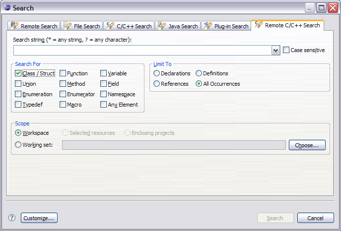

| Search for | Description |
|---|---|
| Class/Struct | Includes classes and structs in your search. |
| Function | Searches for global functions or functions in a namespace (functions that are not members of a class, struct, or union). |
| Variable | Searches for variables that are not members of a class, struct, or union. |
| Union | Searches for unions. |
| Method | Searches for methods that are members of a class, struct, or union. |
| Field | Searches for fields that are members of a class, struct, or union. |
| Enumeration | Searches for enumerations. |
| Enumerator | Searches for enumerators. |
| Namespace | Searches for namespaces. |
| Typedef |
Searches for typedef. |
| Macro |
Searches for macro. |
| Any Element | Includes all elements in the search. |
| Limit to | Description |
|---|---|
| Declarations | Limits the search to declarations. |
| Definitions | Limits the search to definitions (for functions, methods, variables, and fields). |
| References | Limits the search to references. |
| All Occurrences | Includes declarations, definitions, and references in the search. |
| Scope | Availability | Description |
|---|---|---|
| Workspace | all elements | Searches in the full workspace |
| Selected Resources | all elements | Searches the resources selected in the Projects view |
| Enclosing Projects |
all elements |
Searches in the enclosing
projects (plus the include paths) of the selected resource |
| Workings Set | all elements | Searches in a working set |